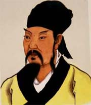

百家讲坛全集
>
百家讲坛2010
>
百家讲坛 唐宋八大家_韩愈

名称：
集数：
播出时间：
百家讲坛 唐宋八大家_韩愈
6
2010年01月24日
唐宋八大家_韩愈，一位在中国文学史上享有盛名并影响深远的中唐诗人，他的诗在当时就流传广泛，上自宫廷，下至民间，处处皆是，其声名还远播到新罗和日本。唐宋八大家_韩愈在唐朝可以说是一个偶像级的人物，他的诗歌影响力不仅在文化圈子里流传，同时也风靡娱乐界。
分集介绍
《百家讲坛》 唐宋八大家_韩愈 （一） 考试进行时
播出时间：
主讲人：
介绍：
2010年01月24日
康震
在唐宋文坛，有八位独具特色的文学家，他们的古文成就对中国文坛的影响一直延续至今，这就是唐宋八大家。位居“唐宋八大家”之首的是唐代著名文学家、思想家、政治家韩愈。他的成长历经磨难，文学天分极高，科举考试接连三次名落孙山，后来，韩愈荣登“龙虎榜”，但仕途并不坦荡，本期百家讲坛邀请北京师范大学文学院博士生导师唐震教授为您讲述韩愈的仕途。
《百家讲坛》 唐宋八大家_韩愈 （二） 理想照亮现实
播出时间：
主讲人：
介绍：
2010年01月25日
康震
聪明勤奋的韩愈在仕途上却屡屡碰壁，上书无门，有志难申，在朝廷做官无门之后，他又能去哪里？大多数人学习韩愈的文章，都从那句“师者，所以传道、授业、解惑也”开始。那么《师说》因何流传千古？本期节目北京师范大学文学院博士生导师唐震教授为大家解答。
《百家讲坛》 唐宋八大家_韩愈 （三） 敢问路在何方
播出时间：
主讲人：
介绍：
2010年01月26日
康震
唐代在人才选拔上仍然被大家族所垄断，韩愈有感于此，写下了千古名篇《师说》，他广收门徒，在此期间，他还提倡将古文运动与儒学复古运动紧密结合在一起的主张。在思想领域，他经过官场的历练，不但回到了朝廷，而且站到了一个高端的地位，使得诸多学子追寻他的思想。
《百家讲坛》 唐宋八大家_韩愈 （四） 沙场初点兵
播出时间：
主讲人：
介绍：
2010年01月27日
康震
本期节目北京师范大学文学院教授康震介绍了韩愈上奏章给唐宪宗，主张武力平定淮西叛乱，并作为行军司马，随裴度去前方作战的情况，同时介绍淮西大捷后，韩愈为此次战役书写的碑文被唐宪宗出尔反尔地轻易抹煞，这让韩愈的心情跌入谷底，也为他最终被贬官埋下伏笔的情况。
《百家讲坛》 唐宋八大家_韩愈 （五） 敢向皇帝说不
播出时间：
主讲人：
介绍：
2010年01月28日
康震
韩愈在担任刑部侍郎期间，仗义执言、敢说敢做，也因此深受唐宪宗的赏识。可是，元和十四年，即公元819年，发生在都城长安的一件三十年难得一遇的大事件，却让君臣二人发生了激烈的争执。由于这件事，不但让韩愈丢掉了他辛辛苦苦奋斗了几十年才换来的四品大员的帽子，而且还差点让他丢掉了脑袋。本期节目嘉宾北京师范大学文学院教授康震讲述了韩愈不惜付出毁灭仕途和生命的代价，公然与唐宪宗叫板的原因以及韩愈的人生由此发生的转变等。
《百家讲坛》 唐宋八大家_韩愈 （六） 一介书生 单刀赴会
播出时间：
主讲人：
介绍：
2010年01月29日
康震
韩愈以戴罪之身，来到位于广东东北部的潮州之后，虽然满腹不平，但并没有懈怠政事。他担任潮州刺史七个多月，把中原的先进文化带到相对落后的岭南地区，为当地民众做了许多好事，潮州人为感念韩愈，甚至将这里的笔架山改称韩山，将山下的鳄溪改称韩江。不过，韩愈在潮州期间，他与当地一个著名人物的交往，却在朝野之间引起了一场轩然大波。